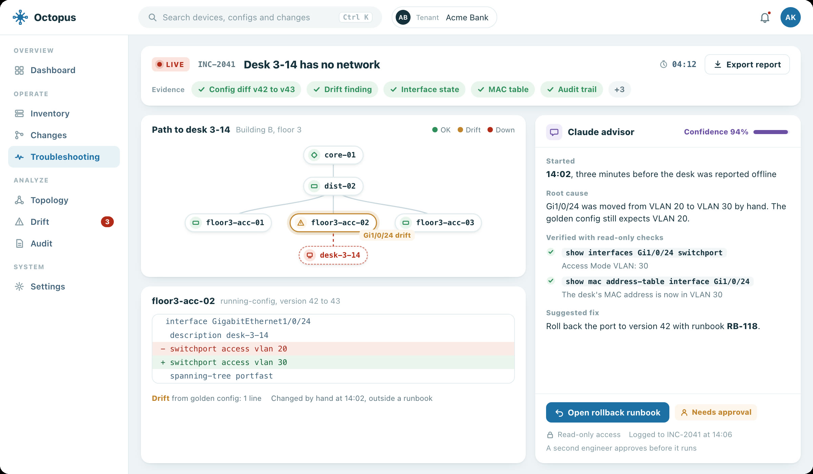

One layer between your team and every network device.
Octopus is an abstraction layer for network operations. It collects and versions every configuration, shows what drifted, and runs changes through approval, execution and rollback, with every step on an audit trail.
Pre-release. Made by Sasmaz labs.
What it does
Inventory
Tenants, sites, devices and credentials in one place. Credentials are inherited from tenant to site to device.
Config versions
Scheduled and on-demand collection over SSH. Every configuration is kept as a version that never changes, with section-aware diffs between any two.
Golden configs and drift
Write down how a device should look once. Octopus tells you which devices drifted and which lines differ.
Change runbooks
Templates rendered for each device, a second person's approval before anything runs, then execution and rollback from the same runbook.
Audit and SIEM
A tamper-evident hash chain for each tenant, sent to the customer's own SIEM over TLS in RFC 5424 format.
Access control
Local accounts and LDAP or Active Directory, two-step sign-in, custom roles and API keys. Each tenant's data is kept apart by PostgreSQL row-level security.
The speed of AI, with a human in the loop.
Attackers and bad actors already use AI to move faster and in more sophisticated ways. We are building Claude into Octopus so your network team has the same power, speed and skill on its side.
When an incident reaches your team, Claude picks it up straight away. It connects to the devices involved with read-only access, finds the root cause, confirms it with its own triage checks and works out the fix.
Every finding goes into the incident record with a confidence score. The engineer on call sees when the problem started, why it started and how to fix it, and makes the call. Any change still runs through an approved runbook.
interface GigabitEthernet1/0/24description desk-3-14switchport mode access- switchport access vlan 20+ switchport access vlan 30spanning-tree portfast
Incident INC-2041: desk 3-14 has no network
- Started
- 14:02, three minutes before the desk was reported offline.
- Root cause
- Gi1/0/24 was moved from VLAN 20 to VLAN 30 by hand, outside any runbook. The golden config still expects VLAN 20.
- Verified with read-only checks
-
show interfaces Gi1/0/24 switchportAccess Mode VLAN: 30show mac address-table interface Gi1/0/24The desk's MAC address is now in VLAN 30 - Suggested fix
- Roll back to version 42 through a runbook. A second engineer approves it before it runs.
Logged to INC-2041 at 14:06
Example data. The advisor is in development.
How it fits together
Octopus sits between your team and your network. It collects every configuration, runs changes only after approval, and writes everything it does to an audit trail your SIEM can read.
Octopus appliance
- Collect
- Inventory of tenants, sites and devices
- Configs pulled over SSH, on a schedule or on demand
- Every version kept, with diffs between any two
- Check
- Golden configs written once
- Drift found down to the line
- Change
- Runbooks rendered for each device
- A second engineer approves
- Run and roll back from the same runbook
- Record
- Every action in a tamper-evident hash chain
- Each tenant's data kept apart
Picks up incidents, checks the devices with read-only access, finds the root cause and suggests the fix with a confidence score. It never changes a device.
Who it is for
Any organization that runs its own network: banks, factories, retail chains, technology companies and internet providers. Managed service providers can use it under a separate license. Octopus is designed to ship as a closed virtual appliance that also works in networks with no internet access.
- Stage
- Pre-release
- Devices
- Cisco IOS, IOS-XE and IOS-XR over SSH first
- Advisor
- Claude, in development
Questions about Octopus?
Write to us. We answer every message ourselves.